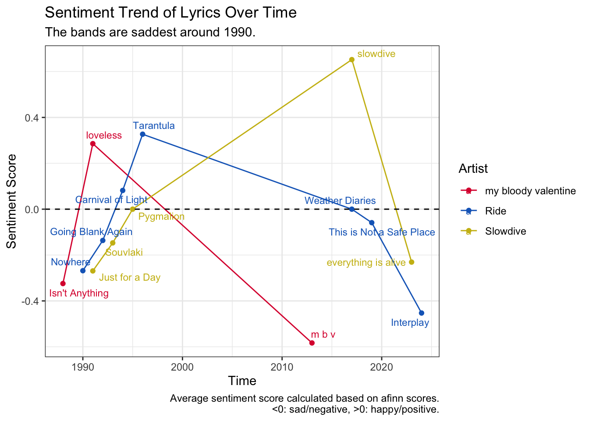

library('stringi')
library('tidyverse')
library('tidytext')
library('lubridate')
# import data
lyrics <- read.csv("lyrics_data.csv")
# clean text
lyrics_clean <- lyrics %>%
mutate(Lyrics = stri_enc_toutf8(Lyrics)) %>%
mutate(Lyrics = str_replace_all(Lyrics, 'â\u0080\u0099', "'")) %>%
mutate(Lyrics = Lyrics %>%
str_remove(".*Lyrics") %>%
str_remove("See.*tickets as low as \\$\\d+") %>%
str_remove('You might also like') %>%
str_remove('\\d*\\s*Embed$') %>%
str_trim()) %>%
filter(!str_detect(Lyrics, "^\\s*$")) %>% # remove instrumental
mutate(Release.Date = dmy(Release.Date)) # set date using lubridateSample Analysis: Who’s the most depressing shoegaze band?
fun
Introduction
Why This Project
My Questions
- Who is the most depressing shoegaze band?
- Who is the most depressed lyricist?
- Is shoegaze bands becoming happier/sadder over time?
Project
Data Acquisition & Wragling
Data Acquisition
Lyrics from all studio albums of the ‘big three’ bands in the shoegaze genre - my bloody valentine, Ride, and slowdive - are retrieved from Genius.com using a Python package named lyricsgenius based on Genius API. Please see the author’s instructions for details.
The downloaded .json files were written into a .csv file for further processing.
Data Cleaning
Here is a typical piece of lyrics retrieved directly from the website. It has some problems:
16 ContributorsBallad of Sister Sue Lyrics Don√¢¬Ä¬ôt tell me I√¢¬Ä¬ôm lost if I don√¢¬Ä¬ôt seem too sure what to wear Don√¢¬Ä¬ôt tell me I√¢¬Ä¬ôm lost if I don√¢¬Ä¬ôt seem too sure what to wear There√¢¬Ä¬ôs a fire in my head and I√¢¬Ä¬ôm blinded by all I can√¢¬Ä¬ôt see There√¢¬Ä¬ôs a fire in my head and I√¢¬Ä¬ôm blinded by all I can√¢¬Ä¬ôt see Dancing to nowhere, I√¢¬Ä¬ôm losing my head among thieves Dancing to nowhere, I√¢¬Ä¬ôm losing my head among thieves And the man at the bar looked like all that he needed was gone And the man at the bar looked like all that he needed was gone Sister, I’ve lost all the feeling I’m lost and I’m sold I lay down beside you Sister, I’m blinded It’s only my eyes I’ve sold them before The man said the drink in his hand would be all he required The man said the drink in his hand would be all he required And it seemed much the same when he pointed the gun at his head And it seemed much the same when he pointed the gun at his head Filled it with lead It made so much noise that I checked out of town, yeah Blood on my face and the words of a sage in my mind (It made so much noise that I checked out of town, yeah) See Slowdive LiveGet tickets as low as $55You might also like Sister, I’ve lost all the feeling I’m lost and I’m sold I lay down beside you Sister, I’m blinded It’s only my eyes I’ve sold them before6Embed
- ‘16 ContributorsBallad of Sister Sue Lyrics’ at the beginning and ‘6Embed’ at the end are not part of the lyrics.
- ‘√¢¬Ä¬ô’ - some problem with Unicode encoding/decoding.
- ‘See Slowdive LiveGet tickets as low as $55’ - ads is also not part of the lyrics.
It now gives a clear output -
Don’t tell me I’m lost if I don’t seem too sure what to wear Don’t tell me I’m lost if I don’t seem too sure what to wear There’s a fire in my head and I’m blinded by all I can’t see There’s a fire in my head and I’m blinded by all I can’t see Dancing to nowhere, I’m losing my head among thieves Dancing to nowhere, I’m losing my head among thieves And the man at the bar looked like all that he needed was gone And the man at the bar looked like all that he needed was gone Sister, I’ve lost all the feeling I’m lost and I’m sold I lay down beside you Sister, I’m blinded It’s only my eyes I’ve sold them before The man said the drink in his hand would be all he required The man said the drink in his hand would be all he required And it seemed much the same when he pointed the gun at his head And it seemed much the same when he pointed the gun at his head Filled it with lead It made so much noise that I checked out of town, yeah Blood on my face and the words of a sage in my mind (It made so much noise that I checked out of town, yeah) Sister, I’ve lost all the feeling I’m lost and I’m sold I lay down beside you Sister, I’m blinded It’s only my eyes I’ve sold them before
# text analysis
token <- lyrics_clean %>%
unnest_tokens(output = Word,
input = Lyrics,
token = 'words')
# stopwords dropped
token_clean <- token %>%
anti_join(stop_words, by = c("Word" = "word"))
# make a word cloud
library('wordcloud')
token_count <- token_clean %>%
group_by(Artist) %>%
count(Word, name = 'Word_count', sort = TRUE)
token_count_head <- token_count %>%
group_by(Artist) %>%
slice(1:40) %>%
mutate(Word = fct_reorder(Word, Word_count, .desc = FALSE))
library(ggplot2)
library(ggwordcloud)
palette <- c("my bloody valentine" = "#DC143C",
"Ride" = "#1569C2",
"Slowdive" = "#CCBA16")
token_count_head %>%
ggplot(aes(label = Word, size = Word_count, color = Artist)) +
geom_text_wordcloud(word.ratio = 0.2, # adjust for overall word size
max_size = 30) +
facet_wrap(~Artist) +
scale_color_manual(values = palette)